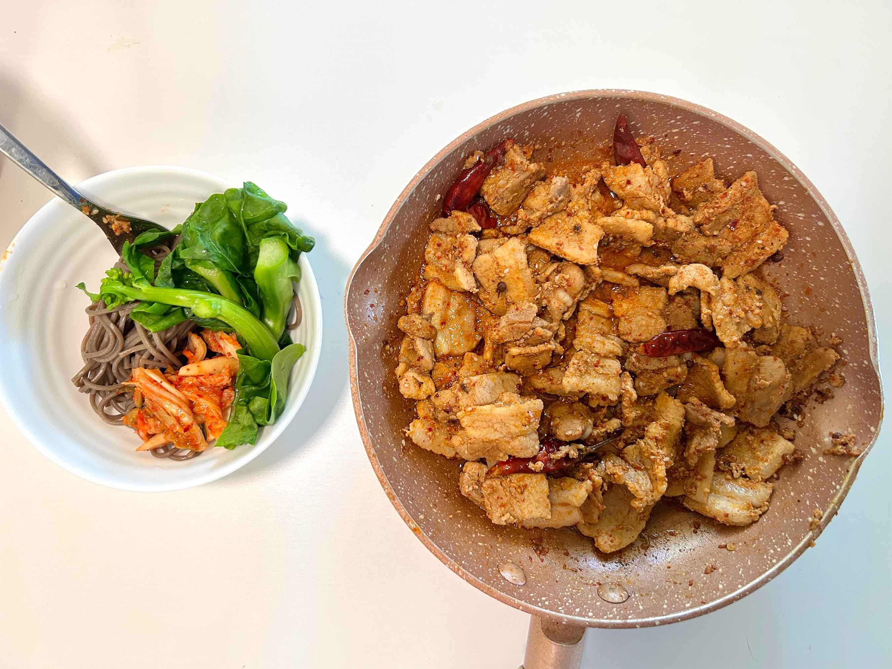

Sichuan Pork Belly
- 4 Tbsp Of Oil
- 1 Lb of Pork Belly
- 4 Tbsp Korean Chili Flakes
- Sesame Seeds
- 1 Tsp Sichuan Peppers
- A Couple of Sichuan Chilis
- Ginger Honey/Sugar
- Cut your vegetables into blocks and leave it on the side.
- Place your pan at medium high heat. Once the pan is hot, add your mixed vegetables.
- Add your meat and let it brown on one side. Add your seasonings into the pan.
- Pour a generous amount of honey on top and mix it with your meat and vegetables.
- After a few minutes of light mixing, pour the food into a bowl.
- Bring the pan into a medium low and add a little oil. Cook your egg with the honey and grease residue.
- Sprinkle some salt, scoop in some rice and add it to your bowl!